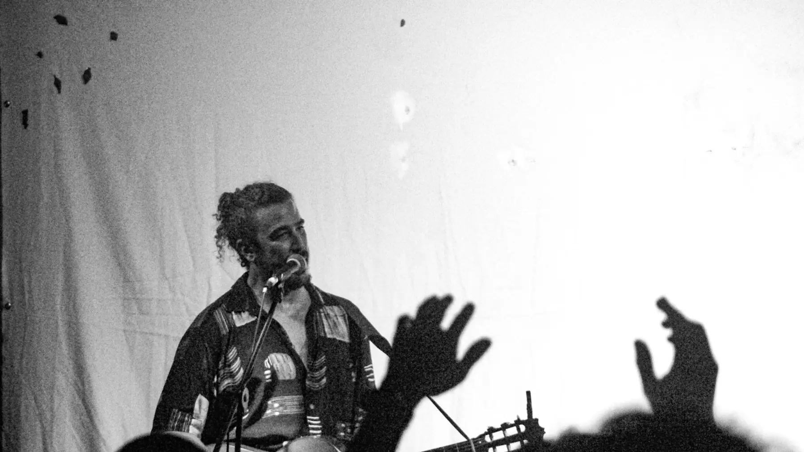
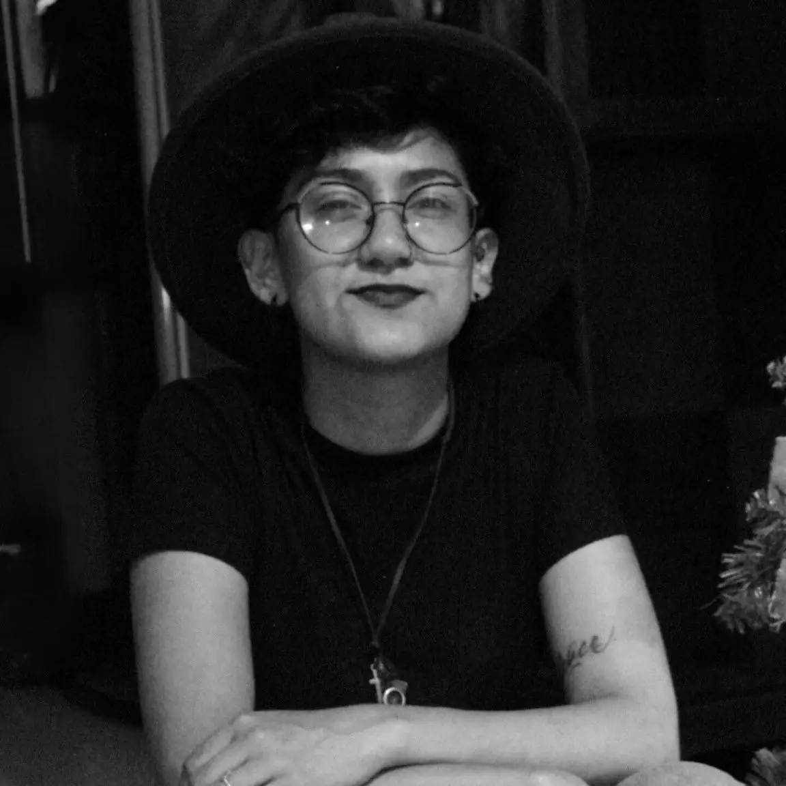

Fotografía
- Conciertos y escenarios con poca luz
- Retrato y sesiones editoriales
- Fotografía de producto
- Cobertura de eventos deportivos

Realizadora audiovisual · fotografía, edición y dirección de arte
Estudiante de décimo semestre de Dirección y Producción de Medios Audiovisuales en la CUN. Busco mis prácticas empresariales en un equipo audiovisual de Bogotá.

Soy estudiante de Medios Audiovisuales con enfoque en comunicación visual, narrativa creativa y producción de contenido. Trabajo con fotografía, ilustración y propuestas visuales, y he aprendido a hacerlo en equipo: editando para marcas en una productora, cubriendo partidos y apoyando transmisiones en vivo.
Me interesa la fotografía en baja luz: los contrastes y las sombras de un escenario, y las personas que normalmente pasan desapercibidas. Firmo mi trabajo fotográfico como Caphtura.
“A través de mi cámara lograba captar momentos, lugares, miradas y acciones que en esencia llenaban mi ser; después me di cuenta de que esto se llama vocación.”Michelle Ramírez
Avokato · Bogotá
Bustacara Producciones · Bogotá
Club deportivo Wolfking F.C. · Puerto Vallarta, México
Quiero sumar mi mirada fotográfica, mi experiencia en edición para marcas y mi trabajo en diseño a una productora, agencia, canal o estudio, mientras termino mi carrera. Tengo disponibilidad en Bogotá.
Escanea para abrir este portafolio en tu teléfono.